Last updated: 2026-07-27
Checks:
Knit directory: MT_Project/
This reproducible R Markdown
analysis was created with workflowr (version
1.7.2). The Checks tab describes the reproducibility checks
that were applied when the results were created. The Past
versions tab lists the development history.
Great! Since the R Markdown file has been committed to the Git
repository, you know the exact version of the code that produced these
results.
Great job! The global environment was empty. Objects defined in the
global environment can affect the analysis in your R Markdown file in
unknown ways. For reproduciblity it’s best to always run the code in an
empty environment.
The command set.seed(20260612) was run prior to running
the code in the R Markdown file. Setting a seed ensures that any results
that rely on randomness, e.g. subsampling or permutations, are
reproducible.
Nice! There were no cached chunks for this analysis, so you can be
confident that you successfully produced the results during this
run.
Great job! Using relative paths to the files within your workflowr
project makes it easier to run your code on other machines.
Great! You are using Git for version control. Tracking code development
and connecting the code version to the results is critical for
reproducibility.
The results in this page were generated with repository version
361c6f0 .
See the Past versions tab to see a history of the changes made
to the R Markdown and HTML files.
Note that you need to be careful to ensure that all relevant files for
the analysis have been committed to Git prior to generating the results
(you can use wflow_publish or
wflow_git_commit). workflowr only checks the R Markdown
file, but you know if there are other scripts or data files that it
depends on. Below is the status of the Git repository when the results
were generated:
Ignored files:
Ignored: .DS_Store
Ignored: .Rhistory
Ignored: .Rproj.user/
Ignored: analysis/.DS_Store
Note that any generated files, e.g. HTML, png, CSS, etc., are not
included in this status report because it is ok for generated content to
have uncommitted changes.
These are the previous versions of the repository in which changes were
made to the R Markdown (analysis/CellScore.Rmd) and HTML
(docs/CellScore.html) files. If you’ve configured a remote
Git repository (see ?wflow_git_remote), click on the
hyperlinks in the table below to view the files as they were in that
past version.
File
Version
Author
Date
Message
Rmd
361c6f0
Sophie.Alice
2026-07-27
Adding Cellscores
Setup
rm(list=ls())
gc() used (Mb) gc trigger (Mb) limit (Mb) max used (Mb)
Ncells 907794 48.5 1752824 93.7 NA 1321095 70.6
Vcells 1598822 12.2 8388608 64.0 16384 2393496 18.3library(readr)
library(dplyr)
library(ggplot2)
library(Seurat)
library(hdf5r)
library(scCustomize)
library(patchwork)
library(cowplot)
library(ggrepel)
library(workflowr)
library(scDblFinder)
library(clustree)
library(harmony)
library(speckle)
library(MAST)
library(tibble)
library(EnhancedVolcano)
library(ggarchery)
library(ggtangle)
library(clusterProfiler)
library(org.Hs.eg.db)
library(GO.db)
library(DOSE)
library(fgsea)
library(forcats)
library(SCpubr)
library(assertthat)
library(UCell)
library(DT)
library(ggforce)
library(enrichplot)
library(ggrain)
library(ComplexHeatmap)
library(tidyverse)
library(circlize)
library(effsize)
library(ggpubr)
Get the Data
path <- "/Users/sophiewagner/Desktop/USZ 25:26/Gabi_Project_Setup/Laila_MT_Project/Laila_MT_Project/RDS_Files/Post_Annotation.rds"
Data <- read_rds(path)
DataAn object of class Seurat
65557 features across 13201 samples within 2 assays
Active assay: RNA (38606 features, 0 variable features)
2 layers present: counts, data
1 other assay present: SCT
3 dimensional reductions calculated: pca, harmony, umapFibroblasts <- subset(Data, cell_type == "Cardiac Fibroblasts")
Idents(Fibroblasts) <- "orig.ident"
custom_palette <- colorRampPalette(c("#005EA8", "#6DB335", "#FFD966", "#EDAAD2", "#9F1C67"))
gradient_colors3 <- custom_palette(6)
gradient_colors4 <- custom_palette(4)
gradient_colors2 <- custom_palette(2)
Functions
#################################################### Raincloud Plots
raincloud.plots <- function(gene_list,
plot_title,
plot_subtitle,
seurat_obj = Data,
colors = gradient_colors4) {
valid_genes <- intersect(gene_list, rownames(seurat_obj))
expression_matrix <- FetchData(seurat_obj, vars = c(valid_genes, "ident"))
rain_data <- expression_matrix %>%
tibble::rownames_to_column("Cell_ID") %>%
tidyr::pivot_longer(
cols = all_of(valid_genes),
names_to = "Gene",
values_to = "Expression"
) %>%
dplyr::rename(Condition = ident)
raincloud_plot <- ggplot(rain_data, aes(x = Condition, y = Expression, fill = Condition, color = Condition)) +
geom_rain(
alpha = 0.6,
violin.args = list(color = NA),
boxplot.args = list(outlier.shape = NA),
point.args = list(
size = 0.4,
alpha = 0.4
),
group = 1
) +
facet_wrap(~Gene, scales = "free_y", ncol = 4) +
scale_fill_manual(values = colors) +
scale_color_manual(values = colors) +
theme_bw() +
labs(
title = plot_title,
subtitle = plot_subtitle,
x = "Experimental Conditions",
y = "Normalized Expression Level"
) +
theme(
plot.title.position = "plot",
plot.title = element_text(face = "bold", size = 12, hjust = 0),
plot.subtitle = element_text(face = "italic", size = 10, hjust = 0),
axis.text.x = element_text(angle = 45, hjust = 1, face = "bold", color = "black"),
axis.text.y = element_text(face = "bold", color = "black"),
axis.title.x = element_text(face = "bold"),
axis.title.y = element_text(face = "bold"),
strip.text = element_text(face = "bold", size = 10),
legend.position = "none"
)
return(raincloud_plot)
}
Main Cellscores
pro_fibrotic_genes <- c(
"ADAM12", "ADAM19", "ADAMTS2", "ADAMTS4", "ADAMTS6", "ADAMTS12",
"ADAMTS14", "ADAMTS16", "ADAMTS17",
"CCN2", "CDH2", "CDH11",
"COL4A1", "COL4A2", "COL5A1", "COL5A2", "COL8A1", "COL8A2",
"COL10A1", "COL11A1", "COL12A1", "COL13A1", "COL15A1",
"COMP", "FAP", "FLRT2", "FN1", "IGFBP7", "ITGA11", "ITGAV", "ITGB1",
"ITGB5", "ITGBL1", "LAMB1", "MMP13", "PDGFA", "PLAU", "PLAUR",
"PLOD2", "POSTN", "PXDN", "RHOA", "RUNX1", "SEMA7A", "SERPINE1",
"SPHK1", "SPOCK1", "SRPX2", "TGFBR1", "THBS1", "THBS2", "THY1",
"TIMP3", "TNFAIP6", "TNFRSF12A", "VIM"
)
Fibroblasts <- AddModuleScore_UCell(
obj = Fibroblasts,
features = list(Pro_Fibrotic = pro_fibrotic_genes),
name = "_UCell"
)
######################################
rescue.score <- c(
"MMP2", "VEGFA", "RCN3", "SRPX2", "ADAM12", "PXDN", "LOXL3", "FBN1",
"HMGA2", "THBS1", "SERPINE1", "HAS2", "GREM1", "WNT5A", "SEMA3C",
"TNFRSF12A", "ITGB1", "FGF2", "COL8A1", "XBP1", "LRP1", "COL12A1",
"POSTN", "ADAMTS6", "ADAMTSL1", "COL14A1", "FBLN5", "ADAMTS1", "ELN")
Fibroblasts <- AddModuleScore_UCell(
obj = Fibroblasts,
features = list(rescue_score = rescue.score),
name = "_UCell"
)
Pro-Fibrotic score
comparison
df_tgf <- Fibroblasts@meta.data %>%
dplyr::filter(orig.ident %in% c("CMF_TGF", "CMFHM_TGF"))
# Define comparison group
my_comparisons <- list(c("CMF_TGF", "CMFHM_TGF"))
# color for the 2 conditions
colors <- c("CMF_TGF" = "#005EA8", "CMFHM_TGF" = "#9F1C67")
# Plot UCell
p_tgf <- ggplot(df_tgf, aes(x = orig.ident, y = Pro_Fibrotic_UCell, fill = orig.ident)) +
geom_violin(alpha = 0.5, color = NA, scale = "area") +
geom_boxplot(width = 0.2, color = "black", outlier.shape = NA, alpha = 0.8) +
scale_fill_manual(values = colors) +
# Add pairwise Wilcoxon test p-value
stat_compare_means(
comparisons = my_comparisons,
method = "wilcox.test",
label = "p.signif"
) +
theme_bw() +
labs(
title = "Pro-Fibrotic Gene Score: TGF-β Response ± Macrophages",
subtitle = "CMF_TGF (No Macrophages) vs CMFHM_TGF (With Macrophages)",
x = "Condition",
y = "UCell Score"
) +
theme(
plot.title.position = "plot",
plot.title = element_text(face = "bold", size = 12, hjust = 0),
plot.subtitle = element_text(face = "italic", size = 10, hjust = 0),
axis.text.x = element_text(angle = 45, hjust = 1, face = "bold", color = "black"),
axis.text.y = element_text(face = "bold", color = "black"),
axis.title.x = element_text(face = "bold"),
axis.title.y = element_text(face = "bold"),
legend.position = "none"
)
print(p_tgf)
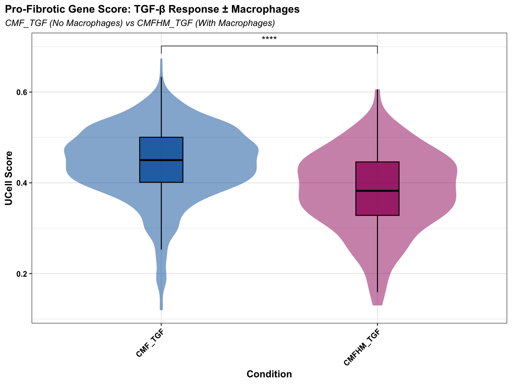
FibroblastsTGF <- subset(Fibroblasts, TGF_status == "TGF_B")
table(FibroblastsTGF$orig.ident)
CMF_TGF CMFHM_TGF
809 124 ##########################################
p_split <- FeaturePlot_scCustom(
FibroblastsTGF,
features = "Pro_Fibrotic_UCell",
split.by = "orig.ident"
)
NOTE: FeaturePlot_scCustom uses a specified `na_cutoff` when plotting to
color cells with no expression as background color separate from color scale.
Please ensure `na_cutoff` value is appropriate for feature being plotted.
Default setting is appropriate for use when plotting from 'RNA' assay.
When `na_cutoff` not appropriate (e.g., module scores) set to NULL to
plot all cells in gradient color palette.
-----This message will be shown once per session.-----p_split <- p_split +
plot_annotation(
title = "Pro-Fibrotic Gene Score: TGF-β Response ± Macrophages",
subtitle = "CMF_TGF (No Macrophages) vs CMFHM_TGF (With Macrophages)",
theme = theme(
plot.title = element_text(face = "bold", size = 12, hjust = 0),
plot.subtitle = element_text(face = "italic", size = 10, hjust = 0)
)
) &
theme(
aspect.ratio = 1.4,
axis.text.y = element_text(size = 12, hjust = 0),
axis.title = element_text(face = "plain"))
print(p_split)
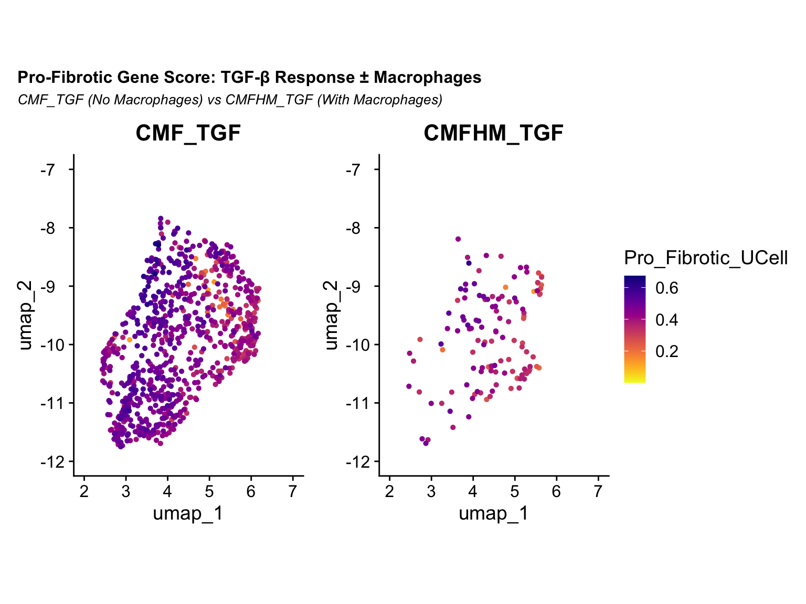
Adding Cliffs
delta
The Cliffs delta to show effect size :
it measures how often values in one group are larger than in another
(ranging from -1 to 1)
Interpretation Scale for Cliff’s Delta (d):
\(\vert{}d\vert{} < 0.147\) :
Negligible\(\vert{}d\vert{} < 0.33\) :
Small\(\vert{}d\vert{} < 0.474\) :
Medium\(\vert{}d\vert{} \ge 0.474\) :
Large
Results:
delta estimate: 0.4221959 (medium)
a medium d in combination with sign. p suggests that the pro-fibrotic
score is decreased when macrophages are present.!
# Calculate Cliff's Delta between CMF_TGF and CMFHM_TGF
cliff.delta(Pro_Fibrotic_UCell ~ orig.ident, data = df_tgf)
Cliff's Delta
delta estimate: 0.4221959 (medium)
95 percent confidence interval:
lower upper
0.3213933 0.5135373
Checking the
individual gene scores
chunk_size <- 25
total_genes <- length(pro_fibrotic_genes)
if (total_genes > 0) {
for (i in seq(1, total_genes, by = chunk_size)) {
end_idx <- min(i + chunk_size - 1, total_genes)
slice_num <- ((i - 1) / chunk_size) + 1
print(SCpubr::do_DotPlot(
sample = FibroblastsTGF,
features = pro_fibrotic_genes[i:end_idx],
dot.scale = 10,
plot.title = "Pro-fibrotic Cell score: TGF-β Response ± Macrophages",
plot.subtitle = paste0("Slice ", slice_num, " (Genes ", i, " to ", end_idx, " of ", total_genes, ")")
))
}
}
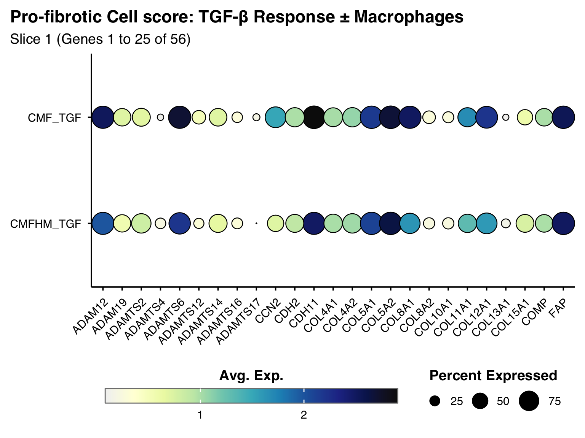
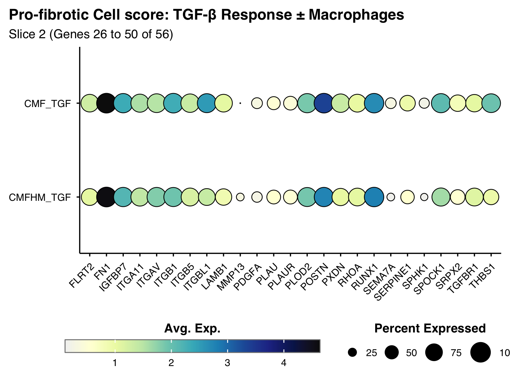
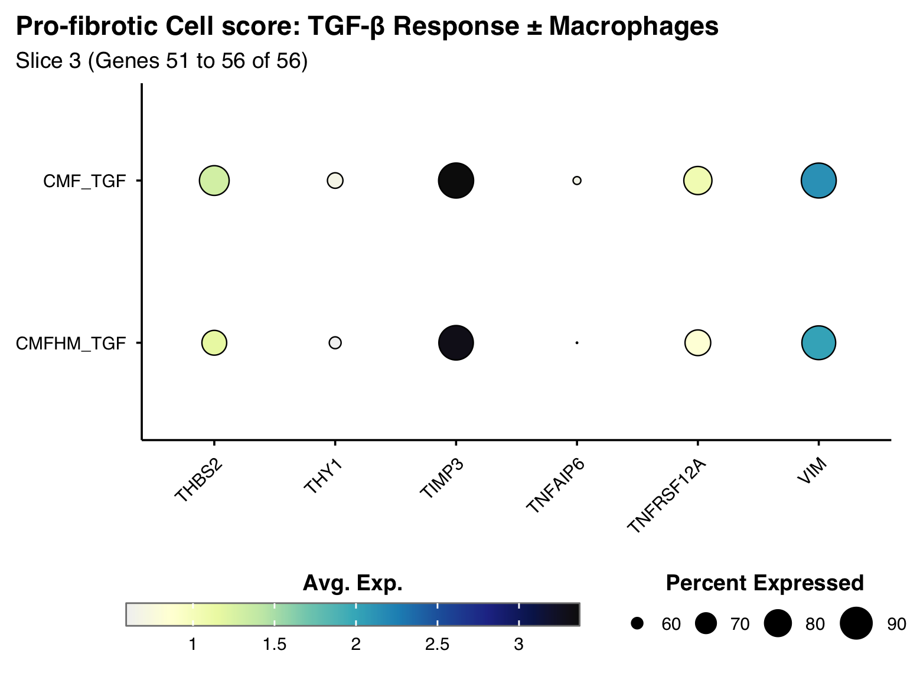
chunk_size <- 12
total_genes <- length(pro_fibrotic_genes)
for (i in seq(1, total_genes, by = chunk_size)) {
end_idx <- min(i + chunk_size - 1, total_genes)
slice_num <- ((i - 1) / chunk_size) + 1
print(raincloud.plots(
gene_list = pro_fibrotic_genes[i:end_idx],
plot_title = "Fibroblasts CMFHM_TGF vs CMF_TGF: Gene distribution profiles across conditions",
plot_subtitle = paste0("Geneset = pro-fibrotic score - Slice ", slice_num),
seurat_obj = FibroblastsTGF,
colors = gradient_colors2
))
}
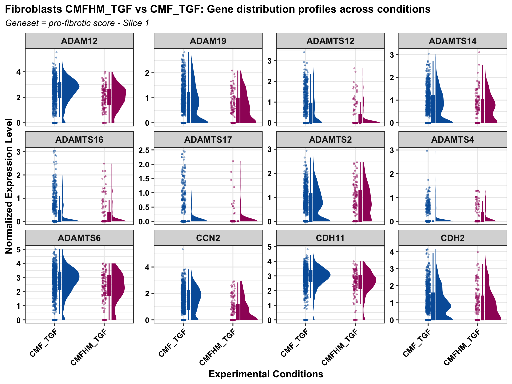
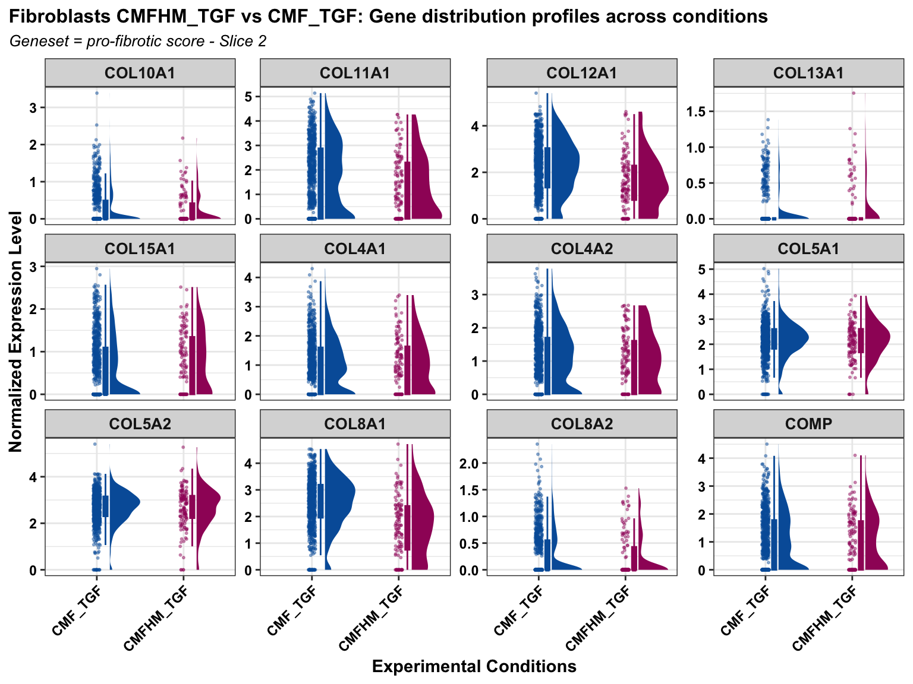
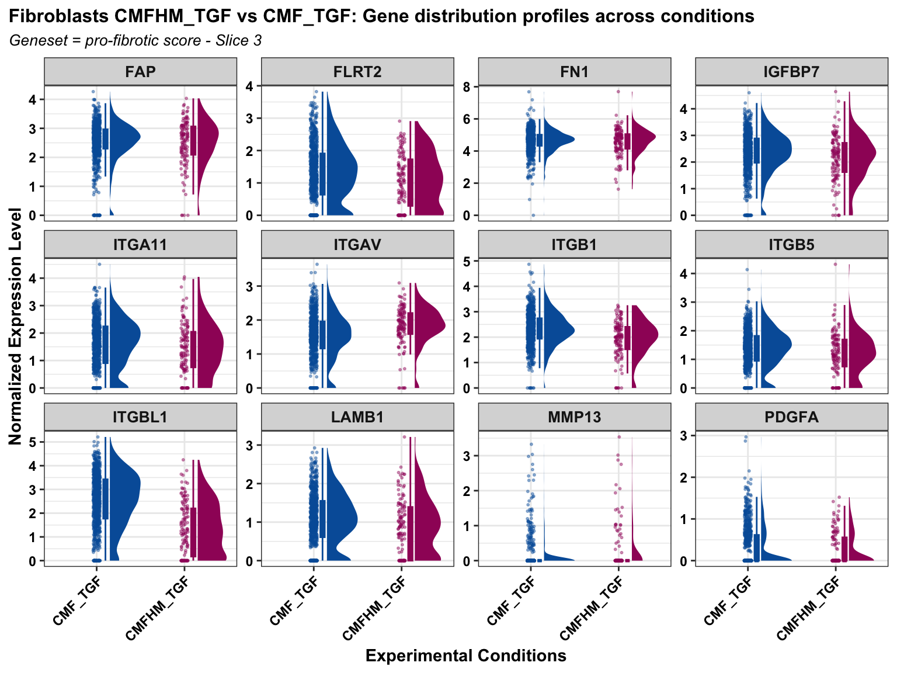
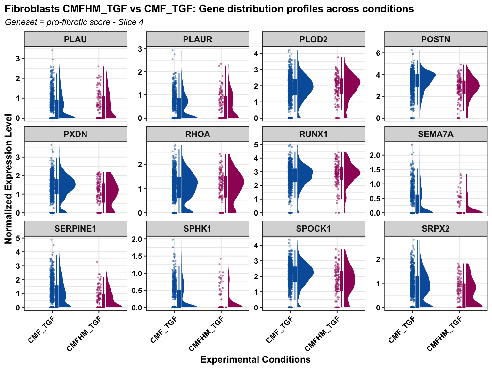
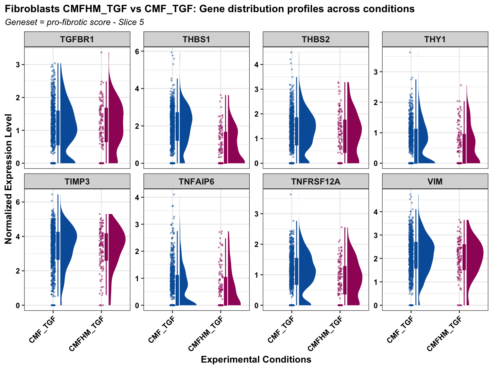
Pro-Fibrotic Module
score separated
Fibroblasts <- subset(Data, cell_type == "Cardiac Fibroblasts")
Idents(Fibroblasts) <- "orig.ident"
fibrosis_modules_expanded <- list(
ECM_Structural = c(
"COL4A1", "COL4A2", "COL5A1", "COL5A2", "COL8A1", "COL8A2",
"COL10A1", "COL11A1", "COL12A1", "COL13A1", "COL15A1",
"FN1", "COMP", "POSTN", "LAMB1", "VIM"),
ECM_Remodeling = c(
"ADAM12", "ADAM19", "ADAMTS2", "ADAMTS4", "ADAMTS6", "ADAMTS12",
"ADAMTS14", "ADAMTS16", "ADAMTS17", "MMP13", "PLAU", "PLAUR",
"SERPINE1", "TIMP3"),
ECM_Crosslinking = c(
"PLOD2", "PXDN", "SPOCK1", "TNFAIP6"),
Cell_Adhesion = c(
"ITGA11", "ITGAV", "ITGB1", "ITGB5", "ITGBL1",
"CDH2", "CDH11", "FAP", "THY1", "FLRT2", "RHOA"),
Fibrotic_Signaling = c(
"CCN2", "PDGFA", "TGFBR1", "THBS1", "THBS2", "SEMA7A",
"TNFRSF12A", "IGFBP7", "SPHK1", "SRPX2", "RUNX1"
)
)
Fibroblasts <- AddModuleScore_UCell(
obj = Fibroblasts,
features = fibrosis_modules_expanded,
name = "_UCell"
)Fibroblasts$cardiomyocyte.genes_UCell <- NULL # removing this so it doesn't interfere with my plot
my_comparisons <- list(c("CMF_TGF", "CMFHM_TGF"))
df_long <- Fibroblasts@meta.data %>%
dplyr::filter(orig.ident %in% c("CMF_TGF", "CMFHM_TGF")) %>%
pivot_longer(
cols = ends_with("_UCell"),
names_to = "Module",
values_to = "Score"
) %>%
mutate(
Module = gsub("_UCell", "", Module),
Module = gsub("_", " ", Module)
)
colors <- c("CMF_TGF" = "#005EA8", "CMFHM_TGF" = "#9F1C67")
# Plot facetted comp
p_modules <- ggplot(df_long, aes(x = orig.ident, y = Score, fill = orig.ident, color = orig.ident)) +
geom_violin(alpha = 0.4, color = NA) +
geom_jitter(width = 0.15, size = 0.3, alpha = 0.2) +
geom_boxplot(width = 0.2, color = "black", outlier.shape = NA, alpha = 0.8) +
scale_fill_manual(values = colors) +
scale_color_manual(values = colors) +
facet_wrap(~ Module, scales = "free_y", ncol = 2) +
scale_y_continuous(expand = expansion(mult = c(0.05, 0.15))) +
stat_compare_means(
comparisons = my_comparisons,
method = "wilcox.test",
label = "p.signif"
) +
theme_bw() +
labs(
title = "Deconstruction of Pro-Fibrotic Response ± Macrophages",
subtitle = "UCell functional sub-modules (CMF_TGF vs CMFHM_TGF)",
x = "Condition",
y = "UCell Score"
) +
theme(
plot.title.position = "plot",
plot.title = element_text(face = "bold", size = 12, hjust = 0),
plot.subtitle = element_text(face = "italic", size = 10, hjust = 0),
strip.background = element_rect(fill = "grey92", color = NA),
strip.text = element_text(face = "bold", size = 10),
axis.text.x = element_text(angle = 45, hjust = 1, face = "bold", color = "black"),
axis.text.y = element_text(face = "bold", color = "black"),
legend.position = "none"
)
print(p_modules)
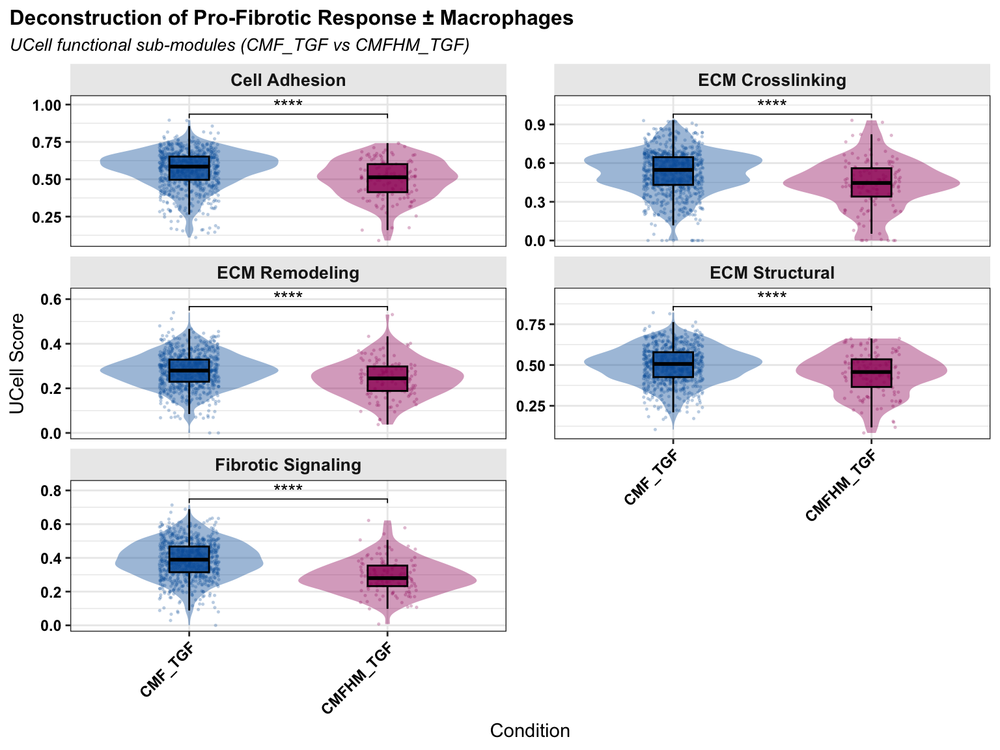
Rescue score
# Plot UCell
p_tgf <- ggplot(df_tgf, aes(x = orig.ident, y = rescue_score_UCell, fill = orig.ident)) +
geom_violin(alpha = 0.5, color = NA, scale = "area") +
geom_boxplot(width = 0.2, color = "black", outlier.shape = NA, alpha = 0.8) +
scale_fill_manual(values = colors) +
# Add pairwise Wilcoxon test p-value
stat_compare_means(
comparisons = my_comparisons,
method = "wilcox.test",
label = "p.signif"
) +
theme_bw() +
labs(
title = "Rescue Score: TGF-β Response ± Macrophages",
subtitle = "CMF_TGF (No Macrophages) vs CMFHM_TGF (With Macrophages)",
x = "Condition",
y = "UCell Score"
) +
theme(
plot.title.position = "plot",
plot.title = element_text(face = "bold", size = 12, hjust = 0),
plot.subtitle = element_text(face = "italic", size = 10, hjust = 0),
axis.text.x = element_text(angle = 45, hjust = 1, face = "bold", color = "black"),
axis.text.y = element_text(face = "bold", color = "black"),
axis.title.x = element_text(face = "bold"),
axis.title.y = element_text(face = "bold"),
legend.position = "none"
)
print(p_tgf)
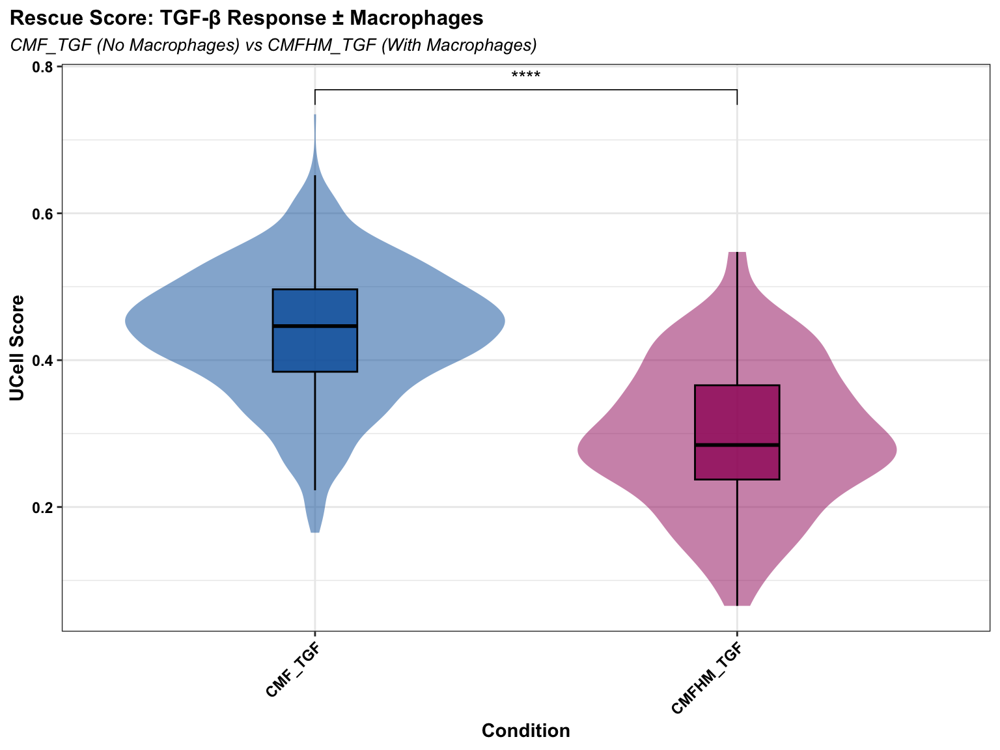
p_split <- FeaturePlot_scCustom(
FibroblastsTGF,
features = "rescue_score_UCell",
split.by = "orig.ident"
)
p_split <- p_split +
plot_annotation(
title = "Rescue Score: TGF-β Response ± Macrophages",
subtitle = "CMF_TGF (No Macrophages) vs CMFHM_TGF (With Macrophages)",
theme = theme(
plot.title = element_text(face = "bold", size = 12, hjust = 0),
plot.subtitle = element_text(face = "italic", size = 10, hjust = 0)
)
) &
theme(
aspect.ratio = 1.4,
axis.text.y = element_text(size = 12, hjust = 0),
axis.title = element_text(face = "plain"))
print(p_split)
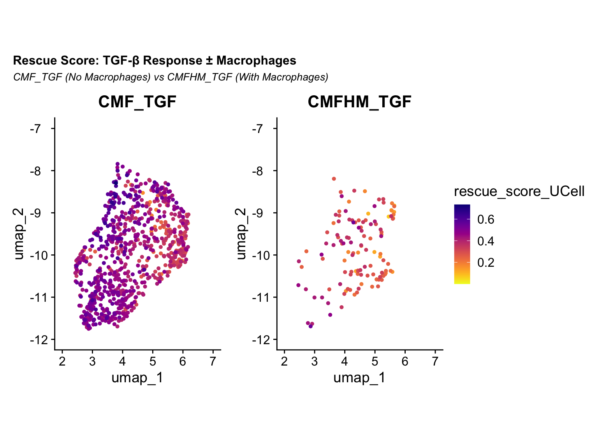
Adding Cliffs
delta
Results:
delta estimate: 0.7087503 (large)
a large d in combination with sign. p suggests that the pro-fibrotic
score is decreased when macrophages are present.!
# Calculate Cliff's Delta between CMF_TGF and CMFHM_TGF
cliff.delta(rescue_score_UCell ~ orig.ident, data = df_tgf)
Cliff's Delta
delta estimate: 0.7087503 (large)
95 percent confidence interval:
lower upper
0.6309776 0.7724193
Subsetted module
scores
Fibroblasts <- subset(Data, cell_type == "Cardiac Fibroblasts")
Idents(Fibroblasts) <- "orig.ident"
fibrosis_modules <- list(
ECM_Deposition = c("COL8A1", "COL12A1", "COL14A1", "ELN", "LOXL3", "PXDN", "HAS2", "FBN1", "FBLN5", "POSTN"),
ECM_Remodeling = c("MMP2", "ADAM12", "ADAMTS1", "ADAMTS6", "ADAMTSL1", "SERPINE1"),
Cell_Matrix_Adhesion = c("ITGB1", "LRP1", "TNFRSF12A", "XBP1"),
Fibrotic_Signaling = c("THBS1", "GREM1", "WNT5A", "VEGFA", "FGF2", "SEMA3C", "SRPX2", "RCN3", "HMGA2")
)
Fibroblasts <- AddModuleScore_UCell(
obj = Fibroblasts,
features = fibrosis_modules,
name = "_UCell"
)Fibroblasts$cardiomyocyte.genes_UCell <- NULL # removing this so it doesn't interfere with my plot
my_comparisons <- list(c("CMF_TGF", "CMFHM_TGF"))
df_long <- Fibroblasts@meta.data %>%
dplyr::filter(orig.ident %in% c("CMF_TGF", "CMFHM_TGF")) %>%
pivot_longer(
cols = ends_with("_UCell"),
names_to = "Module",
values_to = "Score"
) %>%
mutate(
Module = gsub("_UCell", "", Module),
Module = gsub("_", " ", Module)
)
colors <- c("CMF_TGF" = "#005EA8", "CMFHM_TGF" = "#9F1C67")
# Plot facetted comp
p_modules <- ggplot(df_long, aes(x = orig.ident, y = Score, fill = orig.ident, color = orig.ident)) +
geom_violin(alpha = 0.4, color = NA) +
geom_jitter(width = 0.15, size = 0.3, alpha = 0.2) +
geom_boxplot(width = 0.2, color = "black", outlier.shape = NA, alpha = 0.8) +
scale_fill_manual(values = colors) +
scale_color_manual(values = colors) +
facet_wrap(~ Module, scales = "free_y", ncol = 2) +
scale_y_continuous(expand = expansion(mult = c(0.05, 0.1))) +
stat_compare_means(
comparisons = my_comparisons,
method = "wilcox.test",
label = "p.signif"
) +
theme_bw() +
labs(
title = "Deconstruction of Rescue Score ± Macrophages",
subtitle = "UCell functional sub-modules (CMF_TGF vs CMFHM_TGF)",
x = "Condition",
y = "UCell Score"
) +
theme(
plot.title.position = "plot",
plot.title = element_text(face = "bold", size = 12, hjust = 0),
plot.subtitle = element_text(face = "italic", size = 10, hjust = 0),
strip.background = element_rect(fill = "grey92", color = NA),
strip.text = element_text(face = "bold", size = 10),
axis.text.x = element_text(angle = 45, hjust = 1, face = "bold", color = "black"),
axis.text.y = element_text(face = "bold", color = "black"),
legend.position = "none"
)
print(p_modules)
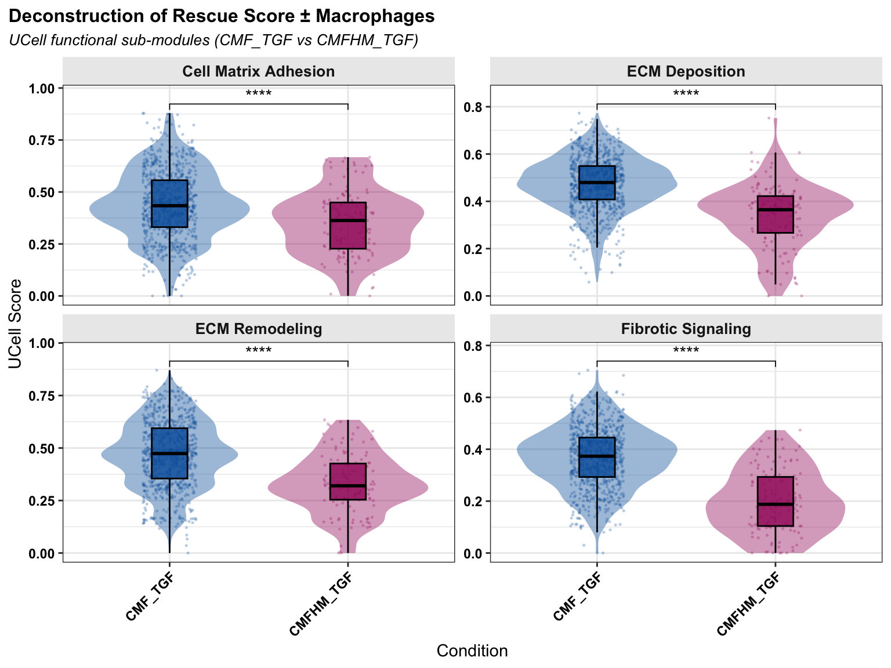
sessionInfo()R version 4.6.0 (2026-04-24)
Platform: aarch64-apple-darwin23
Running under: macOS Sequoia 15.7.7
Matrix products: default
BLAS: /Library/Frameworks/R.framework/Versions/4.6/Resources/lib/libRblas.0.dylib
LAPACK: /Library/Frameworks/R.framework/Versions/4.6/Resources/lib/libRlapack.dylib; LAPACK version 3.12.1
locale:
[1] en_US.UTF-8/en_US.UTF-8/en_US.UTF-8/C/en_US.UTF-8/en_US.UTF-8
time zone: Europe/Zurich
tzcode source: internal
attached base packages:
[1] grid stats4 stats graphics grDevices utils datasets
[8] methods base
other attached packages:
[1] ggpubr_0.6.3 effsize_0.8.1
[3] circlize_0.4.18 lubridate_1.9.5
[5] stringr_1.6.0 purrr_1.2.2
[7] tidyr_1.3.2 tidyverse_2.0.0
[9] ComplexHeatmap_2.28.0 ggrain_0.1.2
[11] enrichplot_1.32.0 ggforce_0.5.0
[13] DT_0.34.0 UCell_2.16.0
[15] assertthat_0.2.1 SCpubr_3.0.1
[17] forcats_1.0.1 fgsea_1.38.0
[19] DOSE_4.6.0 GO.db_3.23.1
[21] org.Hs.eg.db_3.23.1 AnnotationDbi_1.74.0
[23] clusterProfiler_4.20.0 ggtangle_0.1.2
[25] ggarchery_0.4.4 EnhancedVolcano_1.30.0
[27] tibble_3.3.1 MAST_1.38.0
[29] speckle_1.12.0 harmony_2.0.5
[31] Rcpp_1.1.1-1.1 clustree_0.5.1
[33] ggraph_2.2.2 scDblFinder_1.26.2
[35] SingleCellExperiment_1.34.0 SummarizedExperiment_1.42.0
[37] Biobase_2.72.0 GenomicRanges_1.64.0
[39] Seqinfo_1.2.0 IRanges_2.46.0
[41] S4Vectors_0.50.1 BiocGenerics_0.58.1
[43] generics_0.1.4 MatrixGenerics_1.24.0
[45] matrixStats_1.5.0 ggrepel_0.9.8
[47] cowplot_1.2.0 patchwork_1.3.2
[49] scCustomize_3.3.0 hdf5r_1.3.12
[51] Seurat_5.5.0 SeuratObject_5.4.0
[53] sp_2.2-1 ggplot2_4.0.3
[55] dplyr_1.2.1 readr_2.2.0
[57] workflowr_1.7.2
loaded via a namespace (and not attached):
[1] ggpp_0.6.1 goftest_1.2-3 Biostrings_2.80.1
[4] vctrs_0.7.3 spatstat.random_3.5-0 digest_0.6.39
[7] png_0.1-9 shape_1.4.6.1 git2r_0.36.2
[10] deldir_2.0-4 parallelly_1.47.0 fontLiberation_0.1.0
[13] MASS_7.3-65 reshape2_1.4.5 foreach_1.5.2
[16] qvalue_2.44.0 httpuv_1.6.17 withr_3.0.3
[19] ggrastr_1.0.2 xfun_0.59 ggfun_0.2.0
[22] survival_3.8-6 memoise_2.0.1 ggbeeswarm_0.7.3
[25] gson_0.1.0 janitor_2.2.1 systemfonts_1.3.2
[28] tidytree_0.4.7 zoo_1.8-15 GlobalOptions_0.1.4
[31] pbapply_1.7-4 Formula_1.2-5 rematch2_2.1.2
[34] KEGGREST_1.52.2 promises_1.5.0 otel_0.2.0
[37] httr_1.4.8 rstatix_0.7.3 restfulr_0.0.17
[40] globals_0.19.1 fitdistrplus_1.2-6 rstudioapi_0.19.0
[43] UCSC.utils_1.7.1 miniUI_0.1.2 processx_3.9.0
[46] curl_7.1.0 ScaledMatrix_1.20.0 polyclip_1.10-7
[49] SparseArray_1.12.2 doParallel_1.0.17 xtable_1.8-8
[52] evaluate_1.0.5 S4Arrays_1.12.0 hms_1.1.4
[55] irlba_2.3.7 colorspace_2.1-2 polynom_1.4-1
[58] ROCR_1.0-12 reticulate_1.46.0 spatstat.data_3.1-9
[61] magrittr_2.0.5 lmtest_0.9-40 snakecase_0.11.1
[64] later_1.4.8 viridis_0.6.5 ggtree_4.2.0
[67] lattice_0.22-9 spatstat.geom_3.8-1 future.apply_1.20.2
[70] getPass_0.2-4 scattermore_1.2 XML_3.99-0.23
[73] scuttle_1.22.0 RcppAnnoy_0.0.23 pillar_1.11.1
[76] nlme_3.1-169 iterators_1.0.14 compiler_4.6.0
[79] beachmat_2.28.0 RSpectra_0.16-2 stringi_1.8.7
[82] tensor_1.5.1 GenomicAlignments_1.48.0 plyr_1.8.9
[85] crayon_1.5.3 abind_1.4-8 BiocIO_1.22.0
[88] scater_1.40.1 gridGraphics_0.5-1 locfit_1.5-9.12
[91] graphlayouts_1.2.4 bit_4.6.0 fastmatch_1.1-8
[94] whisker_0.4.1 codetools_0.2-20 BiocSingular_1.28.0
[97] bslib_0.11.0 paletteer_1.7.0 GetoptLong_1.1.1
[100] plotly_4.12.0 mime_0.13 splines_4.6.0
[103] fastDummies_1.7.6 tidydr_0.0.6 knitr_1.51
[106] blob_1.3.0 clue_0.3-68 fs_2.1.0
[109] listenv_1.0.0 ggsignif_0.6.4 ggplotify_0.1.3
[112] Matrix_1.7-5 callr_3.8.0 statmod_1.5.2
[115] tzdb_0.5.0 tweenr_2.0.3 pkgconfig_2.0.3
[118] tools_4.6.0 cachem_1.1.0 cigarillo_1.2.0
[121] RSQLite_3.53.2 viridisLite_0.4.3 DBI_1.3.0
[124] fastmap_1.2.0 rmarkdown_2.31 scales_1.4.0
[127] ica_1.0-3 Rsamtools_2.28.0 broom_1.0.13
[130] sass_0.4.10 ggprism_1.0.7 dotCall64_1.2
[133] carData_3.0-6 RANN_2.6.2 farver_2.1.2
[136] scatterpie_0.2.6 tidygraph_1.3.1 yaml_2.3.12
[139] rtracklayer_1.72.0 cli_3.6.6 lifecycle_1.0.5
[142] uwot_0.2.4 backports_1.5.1 bluster_1.22.0
[145] BiocParallel_1.46.0 timechange_0.4.0 gtable_0.3.6
[148] rjson_0.2.23 ggridges_0.5.7 progressr_0.19.0
[151] ape_5.8-1 parallel_4.6.0 limma_3.68.4
[154] enrichit_0.1.5 jsonlite_2.0.0 edgeR_4.10.1
[157] RcppHNSW_0.7.0 bitops_1.0-9 bit64_4.8.2
[160] xgboost_3.2.1.1 Rtsne_0.17 yulab.utils_0.2.4
[163] spatstat.utils_3.2-3 BiocNeighbors_2.6.0 aisdk_1.4.12
[166] jquerylib_0.1.4 metapod_1.20.0 GOSemSim_2.38.0
[169] dqrng_0.4.1 spatstat.univar_3.2-0 lazyeval_0.2.3
[172] shiny_1.14.0 htmltools_0.5.9 sctransform_0.4.3
[175] rappdirs_0.3.4 glue_1.8.1 spam_2.11-4
[178] httr2_1.2.3 XVector_0.52.0 gdtools_0.5.1
[181] RCurl_1.98-1.19 treeio_1.36.1 rprojroot_2.1.1
[184] scran_1.40.0 gridExtra_2.3.1 igraph_2.3.2
[187] R6_2.6.1 ggiraph_0.9.6 labeling_0.4.3
[190] cluster_2.1.8.2 aplot_0.3.0 GenomeInfoDb_1.48.0
[193] mcprogress_0.1.1 DelayedArray_0.38.2 tidyselect_1.2.1
[196] vipor_0.4.7 car_3.1-5 fontBitstreamVera_0.1.1
[199] future_1.70.0 rsvd_1.0.5 KernSmooth_2.23-26
[202] S7_0.2.2 fontquiver_0.2.1 data.table_1.18.4
[205] htmlwidgets_1.6.4 RColorBrewer_1.1-3 rlang_1.2.0
[208] spatstat.sparse_3.2-0 spatstat.explore_3.8-1 ggnewscale_0.5.2
[211] beeswarm_0.4.0